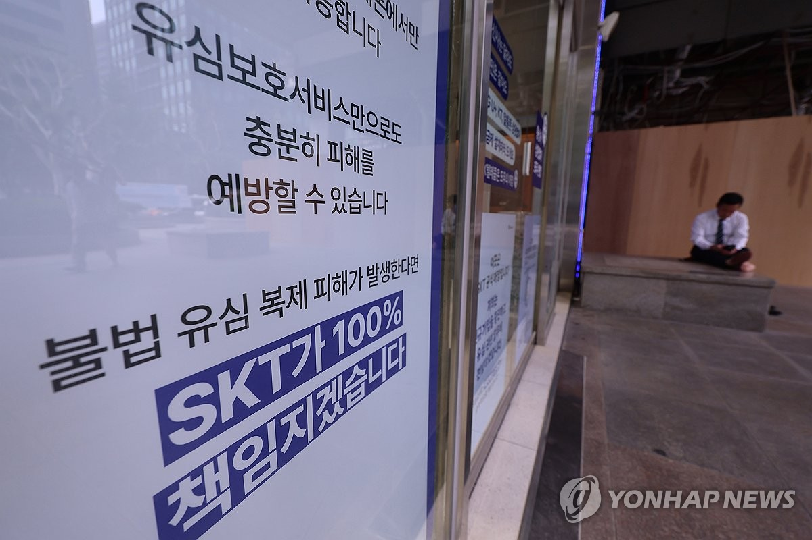

SKT 3월 점유율 40%대 유지…해킹 터진 4월 2천300만명대 깨져
SKT 가입자 이탈 하루 1만명 아래로…해킹 사태 이후 누적 이탈 34만5천명
SKT, 찾아가는 유심교체 서비스 내주부터 시작 전망
(서울=연합뉴스) 서대연 기자 = 유심정보 유출 사태를 수습 중인 SK텔레콤이 도서 벽지에 거주하는 고객을 직접 찾아가 유심을 교체하거나 재설정해주는 서비스를 내주부터 시작할 전망이다. 사진은 14일 서울 시내 한 SKT 매장에 붙은 유심정보 유출 사태 관련 안내문. 2025.5.14 dwise@yna.co.kr
(서울=연합뉴스) 조성미 김현수 기자 = SK텔레콤[017670]이 서버 해킹 사태로 인한 가입자 무더기 이탈이 생기기 전달인 지난 3월 40%대 이동통신 시장 점유율을 유지했다.
하지만, 해킹 사태가 터진 뒤인 4월 가입자 수는 2천300만명 선이 깨진 것으로 보인다.
16일 과학기술정보통신부의 3월 무선 통신서비스 통계 현황에 따르면 SK텔레콤 가입자 수는 2천310만4천여명으로 전체 가입자 40.4%를 차지했다.
3월 SKT 가입자 수는 직전 달인 2월 2천309만9천여명보다 소폭 늘었다. 다만, 모수인 전체 가입자 수도 늘어나며 점유율은 2월 40.5%에서 0.1%포인트 낮아졌다.
한국통신사업자연합회(KTOA)에 따르면 지난 4월 SKT에서 다른 통신사로 이동한 고객은 23만7천여명으로 집계된 바 있다.
과기정통부 통계의 3월 가입자 수에서 23만7천여명을 빼면 4월 SKT 가입자 수는 2천286만여명이다.
모수인 전체 가입자 수는 유동적이지만, 3월과 같다고 가정하면 4월 이 회사 점유율은 39.9%로 추정된다.
다만, 해킹 사태 이후 SK텔레콤에서 다른 통신사로 이동한 가입자가 지난 15일 처음으로 하루 1만명 아래로 감소하는 등 이탈 규모는 작아지고 있다.
지난달 22일 해킹 사고가 알려진 이후 SK텔레콤에서 다른 통신사로 이동한 가입자는 유심 무상 교체 서비스가 시작된 지난달 28일 3만4천132명으로 처음으로 3만명대에 진입했다.
해당 수치는 지난 1일 3만8천716명으로 정점을 찍은 뒤, 3일 2만2천404명, 5일 1만4천393명 등 감소 추세다.
해킹 사태 이후 SK텔레콤에서 다른 통신사로 이동한 가입자는 지난달 22일부터 전날까지 34만5천646명이었고, 신규 가입 등을 감안한 순감 규모는 30만2천918명으로 집계됐다.
hyunsu@yna.co.kr